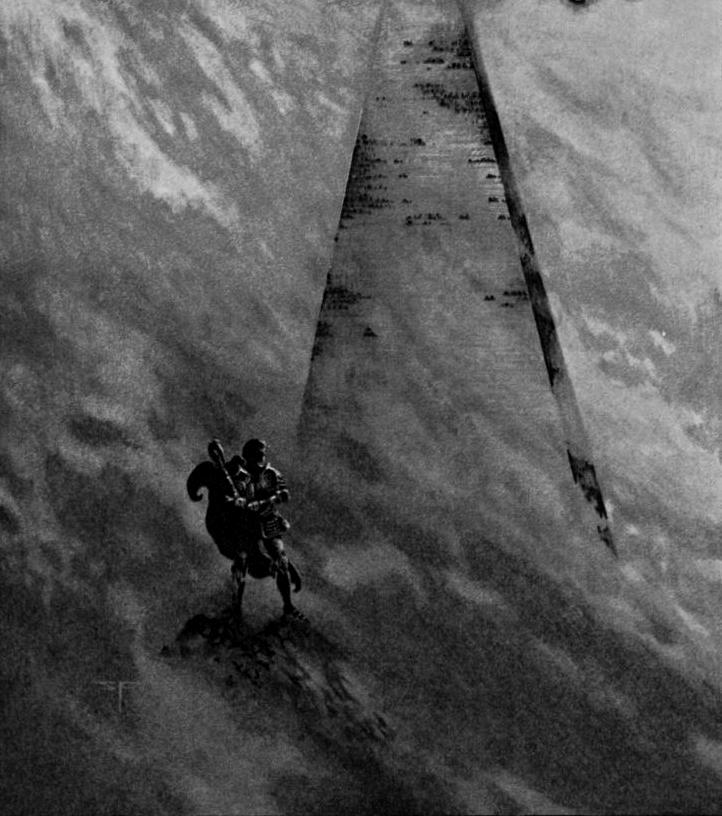

The Last Redoubt
by
William Hope Hodgson
Being the second chapter of THE NIGHT LAND
Since Mirdath, My Beautiful One, died and left me lonely in this world, I have suffered an anguish, and an utter and dreadful pain of longing, such as truly no words shall ever tell; for, in truth, I that had all the world through her sweet love and companionship, and knew all the joy and gladness of Life, have known such lonesome misery as doth stun me to think upon.
Yet am I to my pen again; for of late a wondrous hope has grown in me, in that I have, at night in my sleep, waked into the future of thisworld, and seen strange things and utter marvels, and known once more the gladness of life; for I have learned the promise of the future, and have visited in my dreams those places where in the womb of Time, she and I shall come together, and part, and again come together — breaking asunder most drearly in pain, and again reuniting after strange ages, in a glad and mighty wonder.
And this is the utter strange story of that which I have seen, and which, truly, I must set out, if the task be not too great; so that, in the setting out thereof, I may gain a little ease of the heart; and likewise, mayhap, give ease of hope to some other poor human, that doth suffer, even as I have suffered so dreadful with longing for Mine Own that is dead.
And some shall read and say that this thing was not, and some shall dispute with them; but to them all I say naught, save "Read!" And having read that which I set down, then shall one and all have looked towards Eternity with me — unto its very portals. And so to my telling:
To me, in this last time of my visions, of which I would tell, it was not as if I dreamed; but, as it were, that I waked there into the dark, in the future of this world. And the sun had died; and for me thus newly waked into that Future, to look back upon this, our Present Age, was to look back into dreams that my soul knew to be of reality; but whichto those newly-seeing eyes of mine, appeared but as a far vision, strangely hallowed with peacefulness and light.
Always, it seemed to me when I awaked into the Future, into the Everlasting Night that lapped this world, that I saw near to me, and girdling me all about, a blurred greyness. And presently this, the greyness, would clear and fade from about me, even as a dusky cloud, and I would look out upon a world of darkness, lit here and there with strange sights. And with my waking into that Future, I waked not to ignorance; but to a full knowledge of those things which lit the Night Land; even as a man wakes from sleep each morning, and knows immediately he wakes, the names and knowledge of the Time which has bred him, and in which he lives. And the samewhile, a knowledge I had, as it were sub-conscious, of this Present — this early life, which now I live so utterly alone.
In my earliest knowledge of that place, I was a youth, seventeen years grown, and my memory tells me that when first I waked, or came, as it might be said, to myself, in that Future, I stood in one of the embrasures of the Last Redoubt — that great Pyramid of grey metal which held the last millions of this world from the Powers of the Slayers.
And so full am I of the knowledge of that Place, that scarce can I believe that none here know; and because I have such difficulty, it may be that I speak over familiarly of those things of which I know; and heed not to explain much that it is needful that I should explain to those who must read here, in this ourpresent day. For there, as I stood and looked out, I was less the man of years of this age, than the youth of that, with the natural knowledge of that life which I had gathered by living all my seventeen years of life there; though, until that my first vision, I (of this Age) knew not of that other and Future Existence; yet woke to it so naturally as may a man wake here in his bed to the shining of the morning sun, and know it by name, and the meaning of aught else. And yet, as I stood there in the vast embrasure, I had also a knowledge, or memory, of this present life of ours, deep down within me; but touched with a halo of dreams, and yet with a conscious longing for One, known even there in a half memory as Mirdath.
As I have said, in my earliest memory, I mind that I stood in an embrasure, high up in the side of the Pyramid, and looked outwards through a queer spy-glass to the North-West. Aye, full of youth and with an adventurous and yet half-fearful heart.
And in my brain was, as I have told, the knowledge that had come to me in all the years of my life in the Redoubt; and yet until that moment, this Man of this Present Time had no knowledge of that future existence; and now I stood and had suddenly the knowledge of a life already spent in that strange land, and deeper within me the misty knowings of this our present Age, and, maybe, also of some others.
To the North-West I looked through the queer spy-glass, and saw a landscape that I had looked upon and pored upon through all the years of that life, so that I knew how to name this thing and that thing, and give the very distances of each and every one from the "Centre-Point" of the Pyramid, which was that which had neither length nor breadth, and was made of polished metal in the Room of Mathematics, where I went daily to my studies.
To the North-West I looked, and in the wide field of my glass, saw plain the bright glare of the fire from the Red Pit, shine upwards against the underside of the vast chin of the North-WestWatcher — The Watching Thing of the North-West. . . . "That which hath Watched from the Beginning, and until the opening of the Gateway of Eternity" came into my thoughts, as I looked through the glass . . . the words of Æsworpth, the Ancient Poet (though incredibly future to this our time). And suddenly they seemed at fault; for I looked deep down into mybeing, and saw, as dreams are seen, the sunlight and splendour of this our Present Age. And I was amazed.
And here I must make it clear to all that, even as I waked from this Age, suddenly into that life, so must I — that youth there in the embrasure — have awakened then to the knowledge of this far-back life of ours — seeming to him a vision of the very beginnings of eternity, in the dawn of the world. Oh! I do but dread I make it not sufficient clear that I and he were both I — the same soul. He of that far date seeing vaguely the life that was (that I do now live in this present Age); and I of this time beholding the life that I yet shall live. How utterly strange!
And yet, I do not know that I speak holy truth to say that I, in that future time, had no knowledge of this life and Age, before that awakening; for I woke to find that I was one who stood apart from the other youths, in that I had a dim knowledge — visionary, as it were, of the past, which confounded, whilst yet it angered, those who were the men of learning of that age; though of this matter, more anon. But this I do know, that from that time, onwards, my knowledge and assuredness of the Past was tenfold; for this my memory of that life told me.
And so to further my telling. Yet before I pass onwards, one other thing is there of which I shall speak — In the moment in which I waked out of that youthfulness, into the assured awaredness of this our Age, in that moment the hunger of this my love flew to me across the ages; so that what had been but a memory-dream, grew to the pain of Reality, and I knew suddenly that I lacked; and from that time onwards, I went, listening, as even now my life is spent.
And so it was that I (fresh-born in that future time) hungered strangely for My Beautiful One with all the strength of that new life, knowing that she had been mine, and might live again, even as I. And so, as I have said, I hungered, and found that I listened.
And now, to go back from my digression, it was, as I have said, I had amazement at perceiving, in memory, the unknowable sunshine and splendour of this age breaking so clear through my hitherto most vague and hazy visions; so that the ignorance of Æsworpth was shouted to me by the things which now I knew.
And from that time, onward, for a little space, I was stunned with all that I knew and guessed and felt; and all of a long while the hunger grew for that one I had lost in the early days — she who had sung to me in those faery days of light, that had been in verity. And the especial thoughts of that age looked back with a keen, regretful wonder into the gulf of forgetfulness.
But, presently, I turned from the haze and pain of my dream-memories, once more to the inconceivable mystery of the Night Land, which I viewed through the great embrasure. For on none did it ever come with weariness to look out upon all the hideous mysteries; so that old and young watched, from early years to death, the black monstrosity of the Night Land, which this our last refuge of humanity held at bay.
To the right of the Red Pit there lay a long, sinuous glare, which I knew as the Vale of Red Fire, and beyond that for many dreary miles the blackness of the Night Land; across which came the coldness of the light from the Plain of Blue Fire.
And then, on the very borders of the Unknown Lands, there lay a range of low volcanoes, which lit up, far away in the outer darkness, the Black Hills, where shone the Seven Lights, which neither twinkled nor moved nor faltered through Eternity; and of which even the great spy-glass could make no understanding; nor had any adventurer from the Pyramid ever come back to tell us aught of them. And here let me say, that down in the Great Library of the Redoubt, were the histories of all those, with their discoveries, who had ventured out into the monstrousness of the Night Land, risking not the life only, but the spirit of life.
And surely it is all so strange and wonderful to set out, that I could almost despair with the contemplation of that which I must achieve; for there is so much to tell, and so few words given to man by which he may make clear that which lies beyond the sight and the present and general knowings of Peoples.
How shall you ever know, as I know in verity, of the greatness and reality and terror of the thing that I would tell plain to all; for we, with our puny span of recorded life must have great histories to tell, but the few bare details we know concerning years that are but a few thousands in all; and I must set out to you in the short pages of this my life there, a sufficiency of the life that had been, and the life that was, both within and without that mighty Pyramid, to make clear to those who may read, the truth of that which I would tell; and the histories of that great Redoubt dealt not with odd thousands of years; but with very millions; aye, away back into what they of that Age conceived to be the early days of the earth, when the sun, maybe, still gloomed dully in the night sky of the world. But of all that went before, nothing, save as myths, and matters to be taken most cautiously, and believed not by men of sanity and proved wisdom.
And I, . . . how shall I make all this clear to you who may read? The thing cannot be; and yet I must tell my history; for to be silent before so much wonder would be to suffer of too full a heart; and I must even ease my spirit by this my struggle to tell to all how it was with me, and how it will be. Aye, even to the memories which were the possession of that far future youth, who was indeed I, of his childhood's days, when his nurse of that Age swung him, and crooned impossible lullabies of this mythical sun which, according to those future fairy-tales, had once passed across the blackness that now lay above the Pyramid.
Such is the monstrous futureness of this which I have seen through the body of that far-off youth.
And so back to my telling. To my right, which was to the North, there stood, very far away, the House of Silence, upon a low hill. And in that House were many lights, and no sound. And so had it been through an uncountable Eternity of Years. Always those steady lights, and no whisper ofsound — not even such as our distance-microphones could have discovered. And the danger of this House was accounted the greatest danger of all those Lands.
And round by the House of Silence, wound the Road Where The Silent Ones Walk. And concerning this Road, which passed out of the Unknown Lands, nigh by the Place of the Ab-humans, where was always the green, luminous mist, nothing was known; save that it was held that, of all the works about the Mighty Pyramid, it was, alone, the one that was bred, long ages past, of healthy human toil and labour. And on this point alone, had a thousand books, and more, been writ; and all contrary, and so to no end, as is ever the way in such matters.
And as it was with the Road Where The Silent Ones Walk, so it was with all those other monstrous things . . . whole libraries had there been made upon this and upon that; and many a thousand million mouldered into the forgotten dust of the earlier world.
I mind me now that presently I stepped upon the central travelling-roadway which spanned the one thousandth plateau of the Great Redoubt. And this lay six miles and thirty fathoms above the Plain of the Night Land, and was somewhat of a great mile or more across. And so, in a few minutes, I was at the South-Eastern wall, and looking out through The Great Embrasure towards the Three Silver-fire Holes, that shone before the Thing That Nods, away down, far in the South-East. Southward of this, but nearer, there rose the vast bulk of the South-East Watcher — The Watching Thing of the South-East. And to the right and to the left of the squat monster burned the Torches; maybe half-a-mile upon each side; yet sufficient light they threw to show the lumbered-forward head of the never-sleeping Brute.
To the East, as I stood there in the quietness of the Sleeping-Time on the One Thousandth Plateau, I heard a far, dreadful sound, down in the lightless East; and, presently, again — a strange, dreadful laughter, deep as a low thunder among the mountains. And because this sound came odd whiles from the Unknown Lands beyond the Valley of The Hounds, we had named that far and never-seen Place "The Country Whence Comes The Great Laughter." And though I had heard the sound, many and oft a time, yet did I never hear it without a most strange thrilling of my heart, and a sense of my littleness, and of the utter terror which had beset the last millions of the world.
Yet, because I had heard the Laughter oft, I paid not over-long attention to my thoughts upon it; and when, in a little it died away into that Eastern Darkness, I turned my spy-glass upon the Giants' Pit, which lay to the South of the Giants' Kilns. And these same Kilns were tended by the giants, and the light of the Kilns was red and fitful, and threw wavering shadows and lights across the mouth of the pit; so that I saw giants crawling up out of the pit; but not properly seen, by reason of the dance of the shadows. And so, because ever there was so much to behold, I looked away, presently, to that which was plainer to be examined.
To the back of the Giants' Pit was a great, black Headland, that stood vast, between the Valley of The Hounds (where lived the monstrous Night Hounds) and the Giants. And the light of the Kilns struck the brow of this black Headland; so that, constantly, I saw things peer over the edge, coming forward a little into the light of the Kilns, and drawing back swiftly into the shadows.
And thus it had been ever, through the uncounted ages; so that the Headland was known as The Headland From Which Strange Things Peer; and thus was it marked in our maps and charts of that grim world.
And so I could go on ever; but that I fear to weary; and yet, whether I do weary, or not, I must tell of this countrythat I see, even now as I set my thoughts down, so plainly that my memory wanders in a hushed and secret fashion along its starkness, and amid its strange and dread habitants, sothat it is but by an effort I realise me that my body is not there in this very moment that I write. And so to further tellings:
Before me ran the Road Where The Silent Ones Walk; and I searched it, as many a time in my earlier youth had I, with the spy-glass; for my heart was always stirred mightily by the sight of those Silent Ones.
And, presently, alone in all the miles of that night-grey road, I saw one in the field of my glass — a quiet, cloaked figure, moving along, shrouded, and looking neither to right nor left. And thus was it with these beings ever. It was told about in the Redoubt that they would harm no human, if but the human did keep a fair distance from them; but that it were wise never to comeclose upon one. And this I can well believe.
And so, searching the road with my gaze, I passed beyond this Silent One, and past the place where the road, sweeping vastly to the South-East, was lit a space, strangely, by the light from the Silver-fire Holes. And thus at last to where it swayed to the South of the Dark Palace, and thence Southward still, until it passed round to the Westward, beyond the mountain bulk of the Watching Thing in the South — the hugest monster in all the visible Night Lands. My spy-glass showed it to me with clearness — a living hill of watchfulness, known to us as The Watcher Of The South. It brooded there, squat and tremendous, hunched over the pale radiance of the Glowing Dome.
Much, I know, had been writ concerning this Odd, Vast Watcher; for it had grown out of the blackness of the South Unknown Lands a million years gone; and the steady growing nearness of it had been noted and set out at length by the men they called Monstruwacans; so that it was possible to search in our libraries, and learn of the very coming of this Beast in the olden-time.
And, while I mind me, there were even then, and always, men named Monstruwacans, whose duty it was to take heed of the great Forces, and to watch the Monsters and the Beasts that beset the great Pyramid, and measure and record, and have so full a knowledge of these same that, did one but sway an head in the darkness, the same matter was set down with particularness in the Records.
And, so to tell more about the South Watcher. A million years gone, as I have told, came it out from the blackness of the South, and grew steadily nearer through twenty thousand years; but so slow that in no one year could a man perceive that it had moved.
Yet it had movement, and had come thus far upon its road to the Redoubt, when the Glowing Dome rose out of theground before it — growing slowly. And this had stayed the way of the Monster; so that through an eternity it had looked towards the Pyramid across the pale glare of the Dome, and seeming to have no power to advance nearer.
And because of this, much had been writ to prove that there were other forces than evil at work in the Night Lands, about the Last Redoubt. And this I have always thought to be wisely said; and, indeed, there to be no doubt to the matter, for there were many things in the time of which I have knowledge, which seemed to make clear that, even as the Forces of Darkness were loose upon the End of Man; so were there other Forces out to do battle with the Terror; though in ways most strange and unthought of by the human mind. And of this I shall have more to tell anon.
And here, before I go further with my telling, let me set out some of that knowledge which yet remains so clear within my mind and heart. Of the coming of these monstrosities and evil Forces, no man could say much with verity; for the evil of it began before the Histories of the Great Redoubt were shaped; aye, even before the sun had lost all power to light; though, it must not be a thing of certainty, that even at this far time the invisible, black heavens held no warmth for this world; but of this I have no room to tell; and must pass on to that of which I have a more certain knowledge.
The evil must surely have begun in the Days of the Darkening (which I might liken to a story which was believed doubtfully, much as we of this day believe the story of the Creation). A dim record there was of olden sciences (that are yet far off in our future) which, disturbing the unmeasurable Outward Powers, had allowed to pass the Barrier of Life some of those Monsters and Ab-human creatures, which are so wondrously cushioned from us at this normal present. And thus there had materialized, and in other cases developed, grotesque and horrible Creatures, which now beset the humans of this world. And where there was no power to take on material form, there had been allowed to certain dreadful Forces to have power to affect the life of the human spirit. And this growing very dreadful, and the world full of lawlessness and degeneracy, there had banded together the sound millions, and built the Last Redoubt; there in the twilight of the world — so it seems to us, and yet to them (bred at last to the peace of usage) as it were the Beginning; and this I can make no clearer; and none hath right to expect it; for my task is very great, and beyond the power of human skill.
And when the humans had built the great Pyramid, it had one thousand three hundred and twenty floors; and the thickness of each floor was according to the strength of its need.And the whole height of this pyramid exceeded seven miles, by near a mile, and above it was a tower from which the Watchmen looked (these being called the Monstruwacans). But where the Redoubt was built, I know not; save that I believe in a mighty valley, of which I may tell more in due time.
And when the Pyramid was built, the last millions, who were the Builders thereof, went within, and made themselves a great house and city of this Last Redoubt. And thus began the Second History of this world. And how shall I set it all down in these little pages! For my task, even as I see it, is too great for the power of a single life and a single pen. Yet, to it!
And, later, through hundreds and thousands of years, there grew up in the Outer Lands, beyond those which lay under the guard of the Redoubt, mighty and lost races of terrible creatures, half men and half beast, and evil and dreadful; and these made war upon the Redoubt; but were beaten off from that grim, metal mountain, with a vast slaughter. Yet, must there have been many such attacks, until the electric circle was put about the Pyramid, and lit from the Earth-Current. And the lowest half-mile of the Pyramid was sealed; and so at last there was a peace, and the beginnings of that Eternity of quiet watching for the day when the Earth-Current shall become exhausted.
And, at whiles, through the forgotten centuries, had the Creatures been glutted time and again upon such odd bands of daring ones as had adventured forth to explore through the mystery of the Night Lands; for of those who went, scarce any did ever return; for there were eyes in all that dark; and Powers and Forces abroad which had all knowledge; or so we must fain believe.
And then, so it would seem, as that Eternal Night lengthened itself upon the world, the power of terror grew and strengthened. And fresh and greater monsters developed and bred out of all space and Outward Dimensions, attracted, even as it might be Infernal sharks, by that lonely and mighty hill of humanity, facing its end — so near to the Eternal, and yet so far deferred in the minds and to the senses of those humans. And thus hath it been ever.
And all this but by the way, and vague and ill told, and set out in despair to make a little clear the beginnings of that State which is so strange to our conceptions, and yet which had become a Condition of Naturalness to Humanity in that stupendous future.
Thus had the giants come, fathered of bestial humans and mothered of monsters. And many and diverse were the creatures which had some human semblance; and intelligence, mechanical and cunning; so that certain of these lesser Brutes had machinery and underground ways, having need to secure to themselves warmth and air, even as healthy humans; only that they were incredibly inured to hardship, as they might be wolves set in comparison with tender children. And surely, do I make this thing clear?
And now to continue my telling concerning the Night Land. The Watcher of the South was, as I have set to make known, a monster differing from those other Watching Things, of which I have spoken, and of which there were in all four. One to the North-West, and one to the South-East, and of these I have told; and the other twain lay brooding, oneto the South-West, and the other to the North-East; and thus the four watchers kept ward through the darkness, upon the Pyramid, and moved not, neither gave they out any sound. Yet did we know them to be mountains of living watchfulness and hideous and steadfast intelligence.
And so, in a while, having listened to the sorrowful sound which came ever to us over the Grey Dunes, from the Country of Wailing, which lay to the South, midway between the Redoubt and the Watcher of the South, I passed upon one of the moving roadways over to the South-Western side of the Pyramid, and looked from a narrow embrasure thence far down into the Deep Valley, which was four miles deep, and in which was the Pit of the Red Smoke.
And the mouth of this Pit was one full mile across, and the smoke of the Pit filled the Valley at times, so that it seemed but as a glowing red circle amid dull thunderous clouds of redness. Yet the red smoke rose never much above the Valley; so that there was clear sight across to the country beyond. And there, along the further edge of that great depth, were the Towers, each, maybe, a mile high, grey and quiet; but with a shimmer upon them.
Beyond these, South and West of them, was the enormous bulk of the South-West Watcher, and from the ground rose what we named the Eye Beam — a single ray of grey light, which came up out of the ground, and lit the right eye of the monster. And because of this light, that eye had been mightily examined through unknown thousands of years; and some held that the eye looked through the light steadfastly at the Pyramid; but others set out that the light blinded it, and was the work of those Other Powers which were abroad to do combat with the Evil Forces. But however this may be, as I stood there in the embrasure, and looked at the thing through the spy-glass, it seemed to my soul that the Brute looked straightly at me, unwinking and steadfast, and fully of a knowledge that I spied upon it. And this is how I felt.
To the North of this, in the direction of the West, I saw The Place Where The Silent Ones Kill; and this was so named, because there, maybe ten thousand years gone, certain humans adventuring from the Pyramid, came off the Road Where The Silent Ones Walk, and into that place, and were immediately destroyed. And this was told by one who escaped; though he died also very quickly; for his heart was frozen. And this I cannot explain; but so it was set out in the Records.
Far away beyond The Place Where The Silent Ones Kill, in the very mouth of the Western Night was the Place of the Ab-humans, where was lost the Road Where The Silent Ones Walk, in a dullgreen, luminous mist. And of this place nothing was known; though much it held the thoughts and attentions of our thinkers and imaginers; for some said that there was a Place Of Safety, differing from the Redoubt (as we of this day suppose Heaven to differ from the Earth), and that the Road led thence; but was barred by the Ab-humans. And this I can only set down here; but with no thought to justify or uphold it.
Later, I travelled over to the North-Eastern wall of the Redoubt, and looked thence with my spy-glass at the Watcher of the North-East — the Crowned Watcher it was called, in that within the air above its vast head there hung always a blue, luminous ring, which shed a strange light downwards over the monster — showing a vast, wrinkled brow (upon which an whole library had been writ); but putting to the shadow all the lower face; all save the ear, which came out from the back of the head, and belled towards the Redoubt, and had been said by some observers in the past to have been seen to quiver; but how that might be, I knew not; for no man of our days had seen such a thing.
And beyond the Watching Thing was The Place Where The Silent Ones Are Never, close by the great road; which was bounded upon the far side by The Giant's Sea; and upon the far side of that, was a Road which was always named The Road By The Quiet City; for it passed along that place where burned forever the constant and never-moving lights of a strange city; but no glass had ever shown life there; neither had any light ever ceased to burn.
And beyond that again was the Black Mist. And here, let me say, that the Valley of The Hounds ended towards the Lights of the Quiet City.
And so have I set out something of that land, and of those creatures and circumstances which beset us about, waiting until the Day of Doom, when our Earth-Current should cease, and leave us helpless to the Watchers and the Abundant Terror.
And there I stood, and looked forth composedly, as may one who has been born to know of such matters, and reared in the knowledge of them. And, anon, I would look upward, and see the grey, metalled mountain going up measureless into the gloom of the everlasting night; and from my feet the sheer downward sweep of the grim, metal walls, six full miles, and more, to the plain below.
And one thing (aye! and I fear me, many) have I missed to set out with particularness:
There was, as you do know, all around the base of the Pyramid, which was five and one-quarter miles every way, a great circle of light, which was set up by the Earth-Current, and burned within a transparent tube; or had that appearance. And it bounded the Pyramid for a clear mile upon every side, and burned for ever; and none of the monsters had power ever to pass across, because of what we did call The Air Clog that it did make, as an invisible Wall of Safety. And it did give out also a more subtile vibration, that did affect the weak Brain-Elements of the monsters and the Lower Men-Brutes. And some did hold that there went from it a further vibration of a greater subtileness that gave a protecting against the Evil Forces. And some quality it had truly thiswise; for the Evil Powers had no ability to cause harm to any within. Yet were there some dangers against which it might not avail; but these had no cunning to bring harm to any within the Great Redoubt who had wisdom to meddle with no dreadfulness. And so were those last millions guarded until the Earth-Current should be used to its end. And this circle is that which I have called the Electric Circle; though with failure to explain. But there it was called only, The Circle.
And thus have I, with great effort, made a little clear that grim land of night, where, presently, my listening heard one calling across the dark. And how that this grew upon me, I will set out forthwith.
By William Hope Hodgson, 1912.